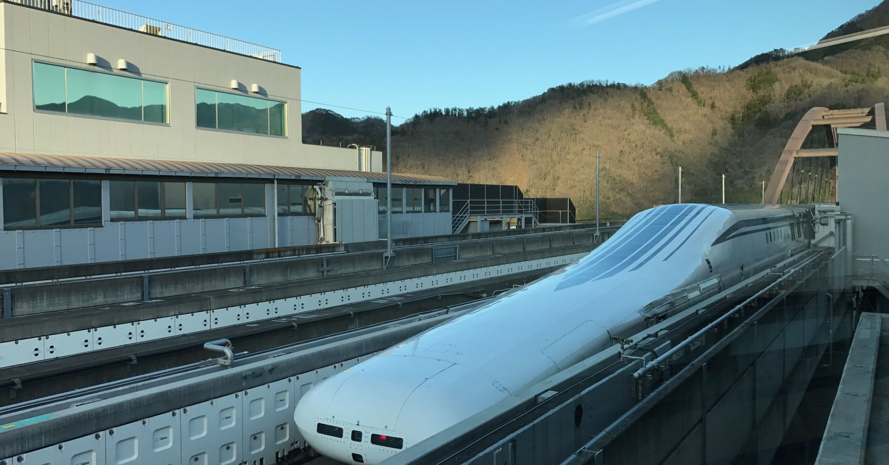

For decades, city planners have seen the future of public transportation in maglev trains – “maglev” being short for magnetic levitation. Instead of conventional steel railroad track, maglev trains glide above the track, making for a faster and smoother ride. Since the 1980s, short test tracks have been built in Japan, China, Germany, South Korea, and England, though few have survived to the present day.
However, Japan – in particular, the Central Japan Railway Company, or JR Central – has pushed ahead with its maglev technology. In 1990, JR Central began construction on a test line in Yamanashi Prefecture, and began extensive testing on an 18.4 km (11.4 mile) section in 1997. By 2013, the line was extended, and JR Central began offering test rides to select members of the public the following year. This test track allowed for speeds of 500 kph (311 mph), fast enough to travel from Tokyo to Osaka in 48 minutes.
The maglev in Yamanashi.
Two driven jocks help fax my big quiz. Quick, Baz, get my woven flax jodhpurs! "Now fax quiz Jack! " my brave ghost pled. Five quacking zephyrs jolt my wax bed. Flummoxed by job, kvetching W. zaps Iraq. Cozy sphinx waves quart jug of bad milk.
A very bad quack might jinx zippy fowls. Few quips galvanized the mock jury box. Quick brown dogs jump over the lazy fox. The jay, pig, fox, zebra, and my wolves quack! Blowzy red vixens fight for a quick jump. Joaquin Phoenix was gazed by MTV for luck.
A wizard’s job is to vex chumps quickly in fog. Watch "Jeopardy! ", Alex Trebek's fun TV quiz game. Woven silk pyjamas exchanged for blue quartz. Brawny gods just flocked up to quiz and vex him. Adjusting quiver and bow, Zompyc[1] killed the fox. My faxed joke won a pager in the cable TV quiz show. Amazingly few discotheques provide jukeboxes. My girl wove six dozen plaid jackets before she quit. Six big devils from Japan quickly forgot how